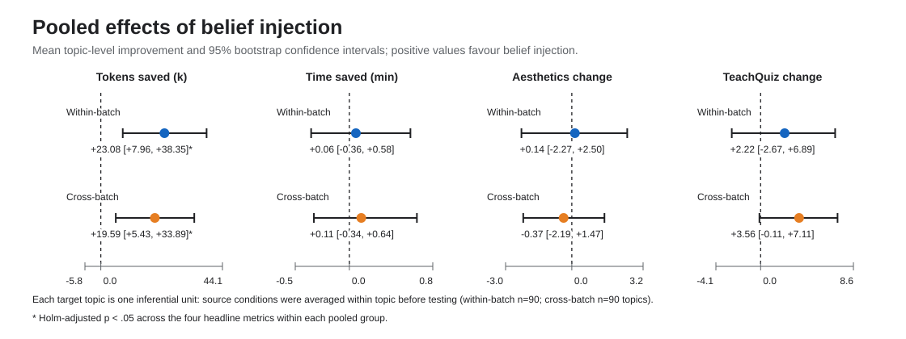
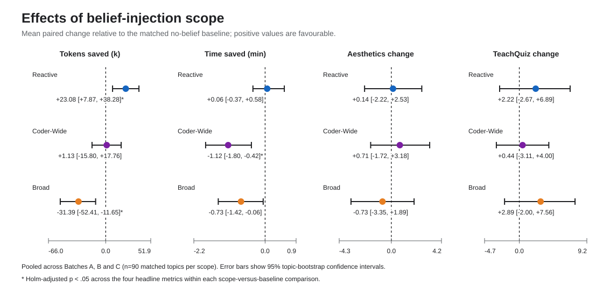
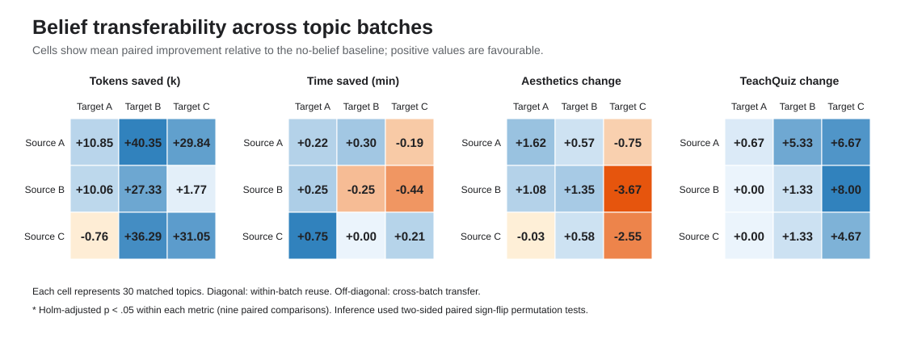

Observe
Collect plans, code, tool calls, errors, repairs, visual reviews and evaluation results.
Honours thesis · Artificial intelligence
A framework that turns the execution experience of an AI video-generation system into reusable, evidence-backed guidance for future tasks.
Hover to explore · Click Generate to watch
The question: Can experience from previous AI generation runs be converted into reusable beliefs that improve later runs?
01 · The problem
Modern AI systems can plan, write code, test it and repair errors. Yet useful lessons often disappear when a run ends.
That matters for structured animation generation: producing an educational video requires many linked decisions about narration, visual layout, timing, code and debugging. Similar failures can recur across different topics, wasting computation and limiting improvement.
02 · The approach
The project extends Code2Video with agents that leave structured execution traces, plus a pipeline that converts those traces into beliefs and selects relevant guidance for later runs.
Collect plans, code, tool calls, errors, repairs, visual reviews and evaluation results.
Discover candidate lessons, then merge, revise, split, retain or exclude them.
Weight supporting and contradicting observations to estimate each belief’s effectiveness.
Rank eligible beliefs by stage, problem, context and exact-error relevance.
Experimental variable
Five beliefs supplied to every agent.
Five beliefs supplied only to coding agents.
One targeted belief supplied after a runtime failure.
Worked example · Explore the process
This real repair illustrates the difference between remembering an answer and learning a belief. Select each stage to follow the evidence from the original failure into a later generation run.
self.play(
215self.lecture[0].set_color(WHITE)
216)
Passing Mobject to Scene.play() is not supported.
A coder tries to pass the result of set_color() directly into Scene.play(). Manim expects an animation, so rendering stops with a concrete diagnostic.
The original code, diagnostic, agent and outcome remain traceable.
The belief describes a reusable strategy rather than copying the repaired program.
The instruction is supplied only when its role and runtime context are relevant.
03 · Experiments and findings
Three independent 30-topic batches were used. Every belief-informed output was paired with the no-belief output for the same topic, so each experiment asks a different question while controlling for topic difficulty.
Each batch’s belief library was applied to a new run over the same 30 topics and compared with the corresponding no-belief outputs.
23.1k fewer tokens per topic, equivalent to a 6.6% reduction. The 95% confidence interval was +7.96k to +38.35k and the Holm-adjusted p-value was .016.
≈No statistically reliable change was detected in time, aesthetics or TeachQuiz gain.
The same selection framework was tested at three intervention points, with every condition compared against the same topic-matched baseline.
Reactive repair saved 23.1k tokens. Coder-wide injection added 1.12 minutes, while broad injection consumed 31.4k additional tokens per topic.
!More guidance was not automatically better; early general advice could propagate additional complexity.
Beliefs produced from each source batch were applied to the other two target batches. Foreign-source effects were averaged within each target topic before pooled inference.
19.6k fewer tokens per topic, equivalent to a 5.6% reduction on unseen batches. The 95% interval was +5.43k to +33.89k; adjusted p = .034.
≈Transfer was evident in efficiency, but not as a statistically reliable quality improvement.
04 · Detailed evidence
Positive values favour belief injection. Confidence intervals show uncertainty; an asterisk indicates statistical significance after correction for multiple comparisons.
fewer tokens per topic, a significant 6.6% reduction
fewer tokens per unseen topic, a significant 5.6% reduction
improved reliably; quality outcomes did not
Within-batch reuse and cross-batch transfer were compared across all four outcomes.

Evidence 02 · Injection timing
Reactive repair had the most favourable efficiency profile. Coder-wide injection increased generation time by 1.12 minutes per topic, while broad injection consumed 31.39k additional tokens per topic.
The likely mechanism is propagation: early, general guidance can add complexity to planning and code, whereas a single belief delivered after a concrete failure addresses an observed need.

Evidence 03 · Transferability
Beliefs produced from one 30-topic batch were applied to the other batches. The significant reduction in token use across unseen targets suggests that the framework captured reusable generation strategies rather than only topic-specific answers.

05 · Significance
Generative AI is computationally expensive and often repeats its mistakes. Reusing validated experience could make agentic systems more efficient, auditable and capable of cumulative improvement.
Fewer generated tokens can reduce cost, energy use and response latency at scale.
Beliefs retain evidence and contradiction histories instead of acting as opaque prompt additions.
Lessons that generalise across topics provide a path towards systems that improve over time.